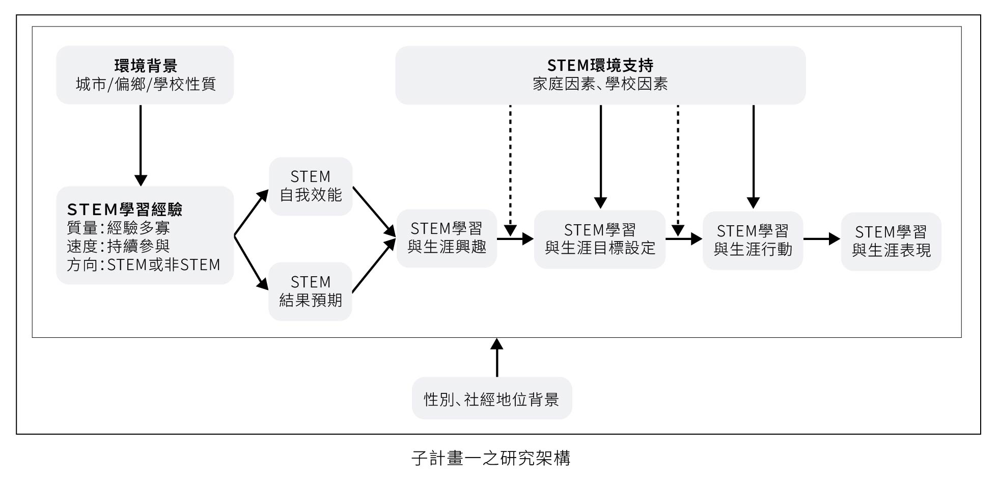

研究架構-子計畫一
子計畫一旨在探討女性中學生如何累積STEM學習經驗及其與生涯發展之關聯，及相關近因與遠因的影響，研究架構以學習動量理論、社會認知生涯理論以及生態理論為基礎。首先，學習動量理論主張學習動量驅使學生達成學習及生涯目標，因此需要豐厚的學習經驗（質量）、不間斷的累積（速率）、與目標相呼應的內容（方向），三者缺一不可，才能將學習動量最大化（An & Taylor, 2019; Wang, 2017），故本研究以STEM學習質量、速度及方向作為STEM學習經驗之內涵。
本研究進一步結合學習動量理論與社會認知生涯理論（SCCT; Lent & Brown, 2019）， SCCT著重學習經驗的累積，視為生涯發展的重要動力來源，其後開展出對自身能力的信念、對未來生涯目標的想法、最後啟動達成目標之行為（Lent et al., 1994）；此外，生態理論（EST）認為個人終其一生都不斷地與環境產生互動，而每個環境都會影響其他環境發生的事情（Bronfenbrenner, 1979, 2001），因此強調個體行為與能力發展必須從多重因素與面向來探究；故本研究將從個人、家庭、社會文化等面向（如性別、社經地位、學校環境背景及不同年段等），分析中學生STEM學習經驗累積及生涯發展之差異。
綜上所述，本研究在SCCT基礎之上，結合學習動量理論，不僅探討STEM相關學習經驗、自我效能、成果預期、興趣等變項，也將擴及非STEM之學習經驗及相關社會認知發展，以統整性的了解國中與高中生的整體STEM學習經驗與生涯發展，同時關注學生的社經與成長背景（生態環境），以具體了解學生的生涯發展路徑。子計畫一之研究架構如圖。
